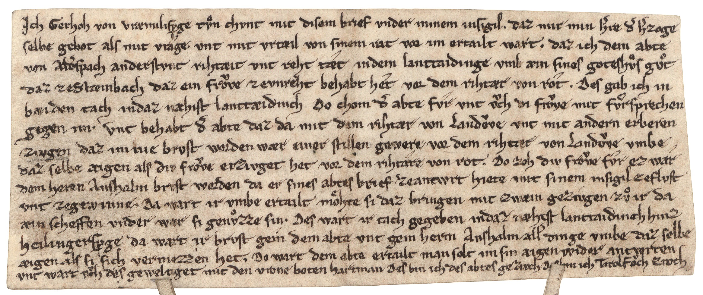

BayHStA, Kloster Aldersbach Urkunden, 16/1



Kommentar
Editor: ellen.bosnjak@textgrid.de
Archiv: BayHStA
Bestand: Kloster Aldersbach Urkunden
Signatur: 16/1
Ort:
Datum: ca. 1230
Schlagwort: Urkunde
Schwierigkeitsgrad: mittel
Kurzbetreff:
Urteilsbrief für den Abt von Aldersbach
Urteilsbrief für den Abt von Aldersbach
Schreiberhände:
- (S1)
Kommentar:
Gerhoh von Vræmilisperge, Landrichter, verkündet als von seinem Herzog beauftragter Richter unter Schilderung des bisherigen Prozeßverlaufes, daß auf dem Landtaiding zu Heilingersperg dem Abt von Altersbach ein zu Steinbach gelegenes Gute zugesprochen wurde, das einer ungenannten Herrin vor dem Richter von Rot zuerkannt worden war. Durch den Fronboten Hartman ist dem Abt das Verfügungsrecht über das Gut übermittelt. Vgl. Wilhelm: Corpus altdeutscher Originalurkunden Nr. 39
Die Urkunde ist in unregelmäßiger gotischer Minuskel mit einzelnen Anklängen an diplomatische Minuskel geschrieben.Groß- und Kleinschreibung ist teils nicht unterscheidbar, z. B. bei a.
Gerhoh von Vræmilisperge, Landrichter, verkündet als von seinem Herzog beauftragter Richter unter Schilderung des bisherigen Prozeßverlaufes, daß auf dem Landtaiding zu Heilingersperg dem Abt von Altersbach ein zu Steinbach gelegenes Gute zugesprochen wurde, das einer ungenannten Herrin vor dem Richter von Rot zuerkannt worden war. Durch den Fronboten Hartman ist dem Abt das Verfügungsrecht über das Gut übermittelt. Vgl. Wilhelm: Corpus altdeutscher Originalurkunden Nr. 39
Die Urkunde ist in unregelmäßiger gotischer Minuskel mit einzelnen Anklängen an diplomatische Minuskel geschrieben.Groß- und Kleinschreibung ist teils nicht unterscheidbar, z. B. bei a.
Entzifferung
(Absatz Beginn)
1 Jch Gerhoh von vræmilisp(er)ge tn chvnt mit disem brief vnder minem insigil. daz mir min h(er)re d(er) h(er)zoge
2 selbe gebot als mit vrage vnt mit vrtæil von sinem rat vor im ertailt wart. daz ich dem abte
3 von Ald(er)spach anderstvnt rihtæit vnt reht tæt indem lanttaidinge vmb æin sines goteshs gt
4 daz zeStæinbach daz ein frve zevnreht behabt het vor dem rihtær von rot. Des gab ich in
5 bæiden tach indaz næhist lanttæidinch Do chom d(er) abte fvr vnt ch di frve met frsprechen
6 gegen im. Vnt behabt d(er) abte daz da mit dem rihtær von Landve vnt mit andern erberen
7 zivgen daz im nie brvst worden wær einer stillen gewere vor dem rihtær von Landve vmbe
8 daz selbe æigen als div frve erzivget het vor dem rihtare von rot. Do zoh div frve fvr ez war
9 dem heren Anshalm brvst worden da er sines abtes brief zeantwrt hiete mit sinem insigil zeflvst
10 vnt zegewinne. Da wart ir vmbe ertailt mhte si daz bringen mit zwæin gezivgen z ir da
11 æin scheffen vnder war si genzze sin. Des wart ir tach gegeben indaz næhest lanttaidinch hinz
12 heilingersp(er)ge da wart ir brvst gein dem abte vnt gein herrn Anshalm all(er) dinge vmbe daz selbe
13 æigen als si sich vermezzen het. Do wart dem abte ertailt man solt im sin aigen wider antwrten
14 vnt wart ch des geweltiget mit den vrone boten hartman Des bin ich des abtes gezivch Des bin ich Tarolf ch zivch
(Absatz Ende)
Transkription
(Absatz Beginn)
1 Jch, Gerhoh von Vraemilisp(er)ge, tn chvnt mit disem brief vnder minem insigil, daz mir min h(er)re, d(er) h(er)zoge,
2 selbe gebot als mit vrage vnt mit vrtaeil von sinem rat vor im ertailt wart, daz ich dem abte
3 von Ald(er)spach anderstvnt rihtaeit vnt reht taet in dem lanttaidinge vmb aein sines goteshs gt,
4 daz ze Staeinbach, daz ein frve ze vnreht behabt het vor dem rihtaer von Rot. Des gab ich in
5 baeiden tach in daz naehist lanttaeidinch. Do chom der abte fvr vnt v%vch di frve met frsprechen
6 gegen im. Vnt behabt d(er) abte daz da mit dem rihtaer von Landve vnt mit andern erberen
7 zivgen, daz im nie brvst worden waer einer stillen gewere vor dem rihtaer von Landve vmbe
8 daz selbe aeigen als div frve erzivget het vor dem rihtare von Rot. Do zoh div frve fvr, ez war
9 dem heren Anshalm brvst worden, da er sines abtes brief ze antwrt hiete mit sinem insigil zeflvst
10 vnt ze gewinne. Da wart ir vmbe ertailt mhte si daz bringen mit zwaein gezivgen z ir da
11 aein scheffen vnder war si genzze sin. Des wart ir tach gegeben in daz naehest lanttaidinch hinz
12 Heilingersp(er)ge, da wart ir brvst gein dem abte vnt gein herrn Anshalm all(er) dinge vmbe daz selbe
13 aeigen, als si sich vermezzen het. Do wart dem abte ertailt, man solt im sin aigen wider antwrten
14 vnt wart v%vch des geweltiget mit den vroneboten Hartman. Des bin ich des abtes gezivch. Des bin ich Tarolf ch zivch.
(Absatz Ende)